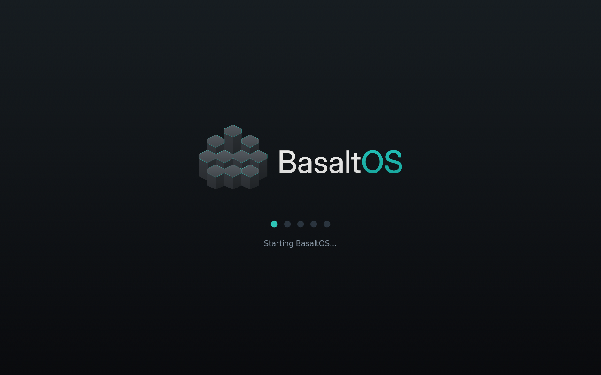
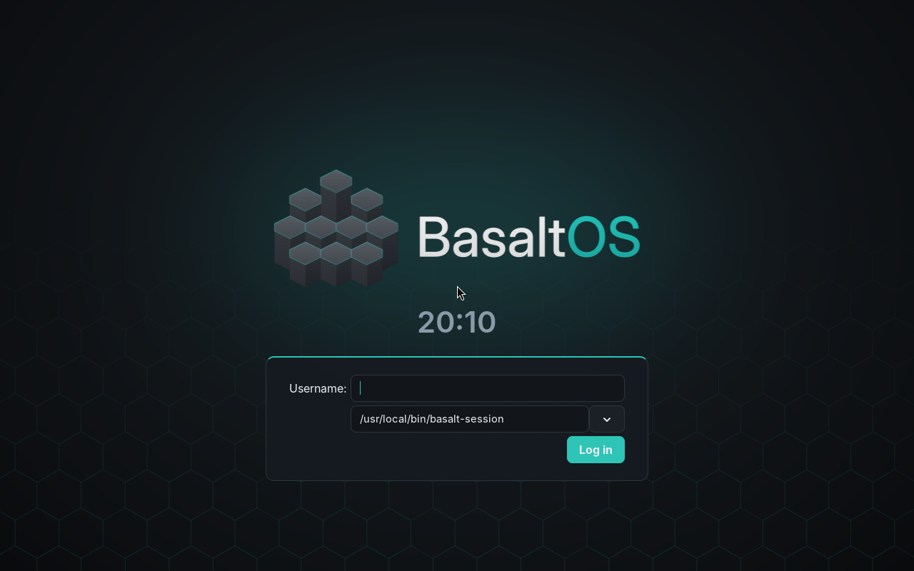
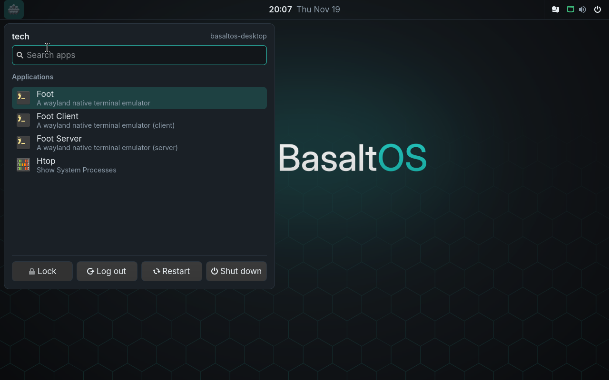
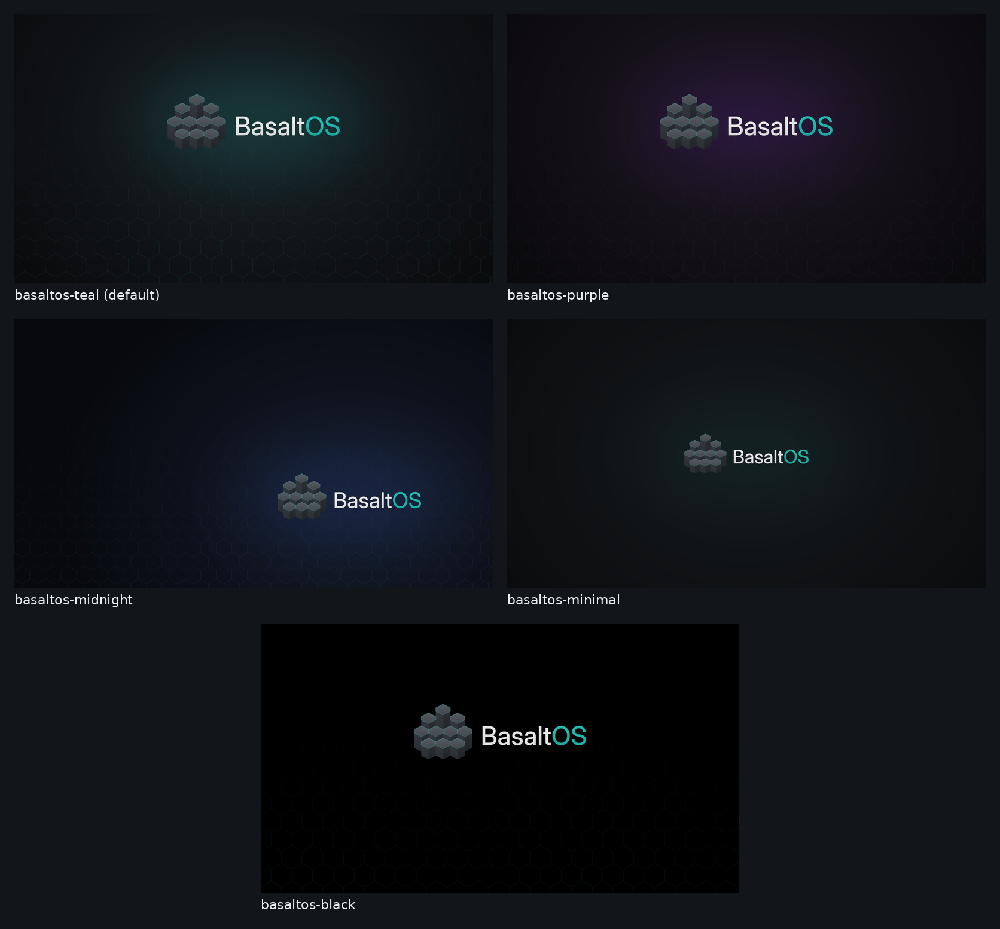

Boot splash
Startup is branded. The cube mark and the BasaltOS wordmark sit in the middle of a dark screen while the system comes up.
Features
Strata is the Wayland session that ships with BasaltOS Server. It is built on labwc, and it wears the BasaltOS mark from the splash through the panel.

Startup is branded. The cube mark and the BasaltOS wordmark sit in the middle of a dark screen while the system comes up.

The greeter matches the splash: mark, wordmark, clock, username, session menu, and a teal Log in button on the hex wallpaper.

The panel button is the BasaltOS logo. Search sits at the top of the menu, then the application list, then Lock, Log out, Restart, and Shut down.
The list sorts A to Z, Z to A, or in a custom order you drag into place. An optional Categories view groups those same apps.

Five wallpapers ship with the desktop. Teal is the default. The others are purple, midnight, minimal, and black. Each one keeps the cube mark and the wordmark.

The top bar holds the clock and the tray. Notifications stack on the right of the desktop, including update notices.